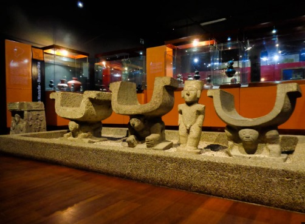

Exposiciones
Explora las exposiciones del Museo Municipal de Guayaquil y descubre colecciones de historia, arqueología, arte y cultura que cuentan la evolución de la ciudad. A través de objetos históricos, piezas arqueológicas y expresiones artísticas, podrás conocer las tradiciones, el patrimonio y los acontecimientos que han marcado la identidad de Guayaquil a lo largo del tiempo.